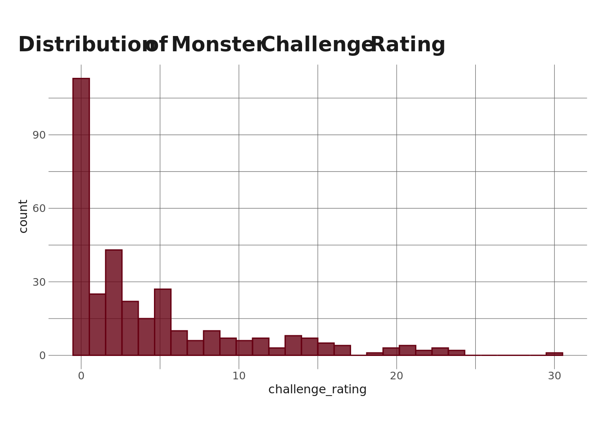
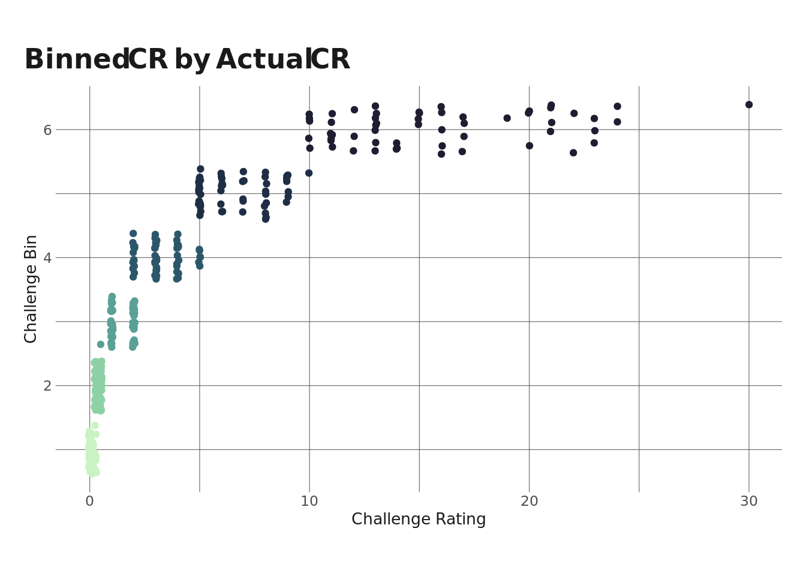
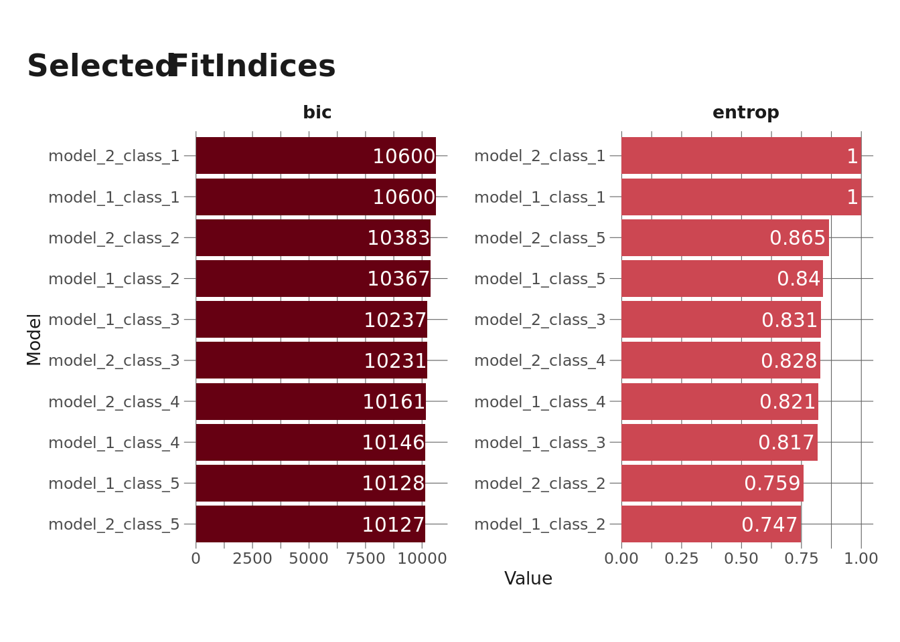
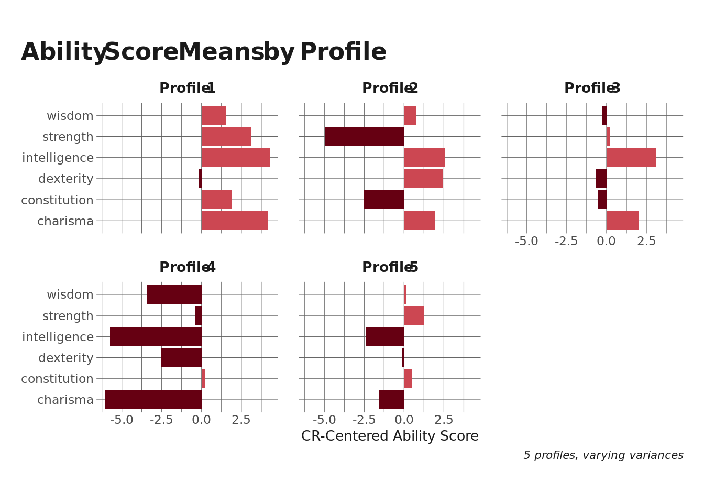

library(tidyverse)
library(eemisc) #ggplot theme
library(jsonlite) #work with json data
library(tidyLPA)
library(harrypotter) #colors
library(tidytext) #for reorder_within function
library(gt) #make tables
herm <- harrypotter::hp(n = 1, option = "HermioneGranger")
opts <- options(
ggplot2.discrete.fill = list(
harrypotter::hp(n = 3, option = "HermioneGranger"),
harrypotter::hp(n = 7, option = "Always")
)
)
theme_set(theme_ee())
dnd_base <- "https://www.dnd5eapi.co/api/monsters/"
#getting data from api -- see 1st d&d post
#for process explanation
fetch_monster <- function(monster) {
dnd_url <- "https://www.dnd5eapi.co/api/monsters/"
ret <- fromJSON(paste0(dnd_url, monster)) %>%
enframe() %>%
pivot_wider(names_from = name,
values_from = value)
return(ret)
}
compare_lens <- function(x, size = 1) {
all(map_lgl(x, ~length(unlist(.x)) == size))
}
cond_unlist <- function(x) {
if (compare_lens(x) == TRUE) {
unlist(x)
} else {
x
}
}
mons <- fromJSON(dnd_base)$results %>%
pull(index)
monster_lists <- purrr::map(mons, fetch_monster)
mons_bind <- bind_rows(monster_lists)
mons_df <- mons_bind %>%
mutate(across(.cols = everything(), ~cond_unlist(x = .x)))This post is the next installment in a mini-series I’m doing where I explore Dungeons and Dragons (D&D) data. In the first post, I showed how to wrangle JSON data from a D&D API, and in the second post, I explored monster statistics.
In this post, I’m going to use latent profile analysis (LPA) and monsters’ ability scores to try to classify monsters into different “classes.” For instance, we might suspect that there is a “class” of up-in-your-face monsters that have high strength and constitution but low intelligence, whereas there may be another class of spell casters that has high intelligence and charisma but low strength and constitution. LPA gives us a framework to estimate how many of these classes exist as well as which monsters fall into which classes.
Note: I’m probably going to use the terms profile, class, group, and cluster somewhat interchangeably throughout this post (because I’m undisciplined), so just as a warning ahead of time – these all mean pretty much the same thing.
Before getting into the meat of this post, I want to give a shoutout to the excellent {tidyLPA]} package, which provides some functions to make doing LPA easier.
So let’s get into it, then.
Setup
First, I’ll load some packages that are useful here. Notably, we’ll load {tidyLPA} for doing the actual LPA. This calls the {mclust} package to fit the model, and I could use {mclust} directly, but {tidyLPA} makes the process somewhat more convenient. I’m also going to get a tibble of monster data in this setup chunk. I walk through this process in my first D&D blog post, so if you’re curious about that, feel free to check out that post.
What is LPA?
Before getting into actually fitting any models, I want to do a very brief and minimally technical toe-dip into what LPA actually is. Like I mentioned just above, LPA is an approach for estimating groups of people/things/monsters/whatever. You might think of it as akin to principal components analysis (PCA) or exploratory factor analysis (EFA), except instead of grouping variables together, LPA groups observations together. LPA is itself a special type of mixture model, and the basic idea of mixture modeling is that there are k latent (underlying) subpopulations (groups) within a population, where the number of groups k is something the researcher/analyst should determine either empirically or using past research.
If you’re familiar with k-means clustering, this probably sounds very similar. And it pretty much is. The main difference between LPA and k-means is that, since LPA estimates distributions for each subpopulation in the model, we get the probability that each observation belongs to each class, e.g. Monster 1 might have a 99% probability of belonging to class 1, whereas Monster 2 might have an 80% probability of belonging to class 1. And depending on how you intend to use your model, this information might be useful. Another potentially useful difference is that LPA provides a number of fit statistics that (at least as far as I know) aren’t available for k-means clustering.
As with EFA (and other latent-variable models), the assumption of LPA is that the latent (unobserved) factor “causes” (I’m using the term loosely here) observed scores on the indicator variables. So, to refer back to my initial hypothetical example, a monster being a spell caster (the unobserved class) causes it to have high intelligence, low strength, etc. rather than the inverse. This is a worthwhile distinction to keep in mind, since it has implications for how the model is fit.
There are some other, more practical considerations regarding LPA that I’ll bring up once we get into the modeling, but this is enough background to get started.
Binning Monsters
I’m not really going to do any data exploration here, since I did that in a previous post. But I do want to quickly pull up a distribution of monster challenge rating because it’s relevant to a step we need to take before fitting our LPA.
mons_df %>%
ggplot(aes(x = challenge_rating)) +
geom_histogram(alpha = .8, fill = herm, color = herm) +
labs(
title = "Distribution of Monster Challenge Rating"
)
For those not in the know, a monster’s challenge rating in D&D refers to how difficult it is to fight (you probably could have guess that from the name), where higher CR = more difficult. Monsters can be difficult for many reasons, such as how they move and how many/which types of spells they have, but often, higher CR means higher ability scores. Since I’m going to be doing an LPA where ability scores are the profile indicators, I want to account for the fact that monsters with higher CRs will tend to have higher ability scores. Without accounting for this, CR will (likely) dominate our LPA, and we’d (probably) end up with profiles that represent “very low level monster,” “kinda low level monster,” “mid-level monster,” etc, rather than profiles that represent a monster archetype (e.g. spellcaster, beefcake).
The approach I’m going to take is to create sexile bins using monster CR to get 6 “bins” of monsters. Using this approach, monsters in each bin will have (roughly) the same CR. We can see this in the plot below.
#divide monsters into hexiles
mons_bin <- mons_df %>%
mutate(cr_bin = ntile(x = challenge_rating, n = 6))
mons_bin %>%
ggplot(aes(x = challenge_rating, y = cr_bin, color = cr_bin)) +
geom_jitter() +
scale_color_hp() +
labs(
y = "Challenge Bin",
x = "Challenge Rating",
title = "Binned CR by Actual CR"
) +
theme(
legend.position = "none"
)
Since the distribution we saw above has a long right tail, the higher-CR bins are more spread out than the lower bins, but obviously each bin has less variance than the entire population.
The next step is to group mean center each monster’s ability scores. To do this, I’ll subtract the bin-average ability score from the monster ability score. So, for example, to group mean center a monster in bin 1’s strength score, I’d subtract the bin-average strength score from the monster’s strength score. The resulting score tells me if the monster’s score is higher than average for it’s CR or lower than average for it’s CR. Importantly, this removes the effect of the bin average on our LPA. I could go a step further and divide by the bin-specific standard deviation to remove the effect of bin-specific variance, but that makes the estimates somewhat harder to interpret, so I’m not going to.
ab_scores <- c("strength", "dexterity", "constitution", "intelligence", "wisdom", "charisma")
mons_bin <- mons_bin %>%
group_by(cr_bin) %>%
mutate(across(.cols = ab_scores, .fns = mean, .names = "{.col}_bin_mean")) %>%
ungroup()
ab_scores_grp <- str_replace_all(ab_scores, "$", "_bin_mean")
mons_centered <- map2_dfc(mons_bin[, ab_scores], mons_bin[, ab_scores_grp],
~.x - .y) %>%
rename_with(.fn = ~str_replace_all(.x, "$", "_centered")) %>%
bind_cols(mons_bin, .) %>%
select(name, ends_with("centered"))Fit LPA & Select Best Model
The next step is to estimate our LPA. This is very easy using {tidyLPA}’s estimate_profiles() function. Here’s what I’m doing in the step below:
- Setting the
n_profilesoption to 1:5, which will fit models with 1 profile, 2 profiles, …, 5 profiles. - Setting the
variancesoption to equal and varying. This will fit 1-5 profile models where the conditional variances of each indicator are constrained to be equal across profiles as well as 1-5 profile models where the conditional variances are allowed to vary. - Setting
covariancesequal to 0. The means that indicator variables are conditionally independent. - Telling the model to only use the centered ability score variables to estimate the profiles.
Also! always remember to set your seed.
set.seed(0408)
lpa_fits <- mons_centered %>%
estimate_profiles(1:5,
variances = c("equal", "varying"),
covariances = c("zero", "zero"),
select_vars = str_subset(names(mons_centered), "centered"))Now that the model is fit, I want to select the best model. {tidyLPA} makes this pretty easy via the compare_solutions() function, which I’ll use later, but I also want to explore a few fit indices – Bayesian Information Criterion (BIC) and entropy. I’ve forgotten what BIC actually is, but I do know that it’s the fit index that people who know more about statistics than I do suggest we want to minimize in LPA. Entropy is a measure of how distinct classes are from one another and ranges from 0-1, where values closer to 1 represent more separation between classes (which is what we want). I’m going to pull these out and plot them.
mods <- names(lpa_fits)
#recall that model 1 corresponds to equal variances; model 2 corresponds to varying variances
#getting some fit indices
bics <- map_dbl(1:10, ~pluck(lpa_fits, .x, "fit", "BIC"))
entrops <- map_dbl(1:10, ~pluck(lpa_fits, .x, "fit", "Entropy"))
fit_indices <- bind_cols(mods, bics, entrops) %>%
set_names(c("model", "bic", "entrop")) %>%
pivot_longer(cols = c("bic", "entrop"),
names_to = "metric",
values_to = "val")
fit_indices %>%
ggplot(aes(x = val, y = reorder_within(model, val, metric), fill = metric)) +
geom_col() +
geom_text(aes(label = if_else(val > 1, round(val, 0), round(val, 3)), x = val - .01), hjust = 1, color = "white") +
facet_wrap(vars(metric), scales = "free") +
scale_y_reordered() +
labs(
y = "Model",
x = "Value",
title = "Selected Fit Indices"
) +
theme(
legend.position = "none"
)
A couple things to keep in mind here:
- Models with 1 class will always have an entropy of 1 since there’s no overlap between classes.
- Model 1, Class 5 (equal variances, 5 profiles) threw a warning indicating that < 1% of observations were classified into one profile, so we probably don’t want to use that one.
We can see in the above plot that Model 2, Class 5 (varying variances, 5 profiles) has the lowest BIC (other than the model we want to ignore anyway) and the highest entropy (other than the 1-profile models). So that’s the one we likely want to go with, but let’s see what compare_solutions() tells me.
lpa_fits %>%
compare_solutions()Compare tidyLPA solutions:
Model Classes BIC
1 1 10599.528
1 2 10366.807
1 3 10237.207
1 4 10145.513
1 5 10127.963
2 1 10599.528
2 2 10383.456
2 3 10230.918
2 4 10160.966
2 5 10127.499
Best model according to BIC is Model 2 with 5 classes.
An analytic hierarchy process, based on the fit indices AIC, AWE, BIC, CLC, and KIC (Akogul & Erisoglu, 2017), suggests the best solution is Model 2 with 5 classes.Examine Profiles
Now that we’ve selected a model specification, let’s look at what each profile looks like. The plot below shows the average bin-centered ability scores for each profile.
prof_estimates <- get_estimates(lpa_fits) %>%
filter(Model == 2,
Classes == 5)
prof_estimates %>%
filter(Category == "Means") %>%
mutate(Class = str_replace_all(Class, "^", "Profile "),
Parameter = str_remove_all(Parameter, "_centered")) %>%
ggplot(aes(x = Estimate, y = Parameter)) +
geom_col(aes(fill = if_else(Estimate > 0, TRUE, FALSE))) +
facet_wrap(vars(Class)) +
labs(
y = NULL,
x = "CR-Centered Ability Score",
title = "Ability Score Means by Profile",
caption = "5 profiles, varying variances"
) +
theme(
legend.position = "none"
)
Profiles 1 and 4 aren’t terribly interesting – they represent monsters that have all ability scores either higher or lower than the bin average. This is probably an artifact of the challenge rating variation within each bin (especially the higher ones). Profiles 1, 3, and 5 are interesting, though.
- Profile 2 seems to represent spell-casting monsters with lower strength and constitution but higher intelligence, dexterity, and charisma.
- Likewise, Profile 3 looks like a different type of spellcaster, with very high intelligence and charisma.
- Profile 5 is more of a fighter-type monster, with higher strength and constitution but low intelligence and charisma.
Next, I’ll check how many monsters ended up in each class. I didn’t get a warning for this model suggesting that a class had dangerously low membership, but it’s still good practice to check this.
class_assigns <- get_data(lpa_fits) %>%
filter(model_number == 2,
classes_number == 5) %>%
group_by(id) %>%
filter(Probability == max(Probability)) %>%
ungroup() %>%
select(name, Class, Probability)
class_assigns %>%
count(Class)# A tibble: 5 × 2
Class n
<dbl> <int>
1 1 68
2 2 69
3 3 32
4 4 45
5 5 120This feels reasonable to me. The smallest class (Class 3) still comprises ~10% of the total monsters in the dataset.
Finally, let’s take a quick look at one example monster from each class as well as the estimated probability that the mosnter belongs to that class (note that the assigned/estimated class is the class for each monster with the highest probability.)
set.seed(0409)
class_assigns %>%
group_by(Class) %>%
sample_n(size = 1) %>%
ungroup() %>%
select(Class, name, Probability) %>%
gt() %>%
tab_header(
title = "Example Monster for Each Class"
) %>%
cols_label(
Class = "Esimated Class",
name = "Monster",
Probability = "Estimated Class Prob"
) %>%
fmt_percent(
columns = vars(Probability)
)| Example Monster for Each Class | ||
|---|---|---|
| Esimated Class | Monster | Estimated Class Prob |
| 1 | Grimlock | 96.19% |
| 2 | Drider | 98.36% |
| 3 | Veteran | 99.14% |
| 4 | Scorpion | 64.04% |
| 5 | Swarm of Rats | 89.60% |
That’s it for now! Hopefully that was interesting to people who like D&D and helpful for anyone interested in LPA. I’ll probably do one more post in this series, and likely one that gets into some predictive modeling.
Reuse
Citation
BibTeX citation:
@online{ekholm2021,
author = {Ekholm, Eric},
title = {Dungeons and {Dragons} - {Part} 3},
date = {2021-02-03},
url = {https://www.ericekholm.com/posts/dungeons-and-dragons-part-3},
langid = {en}
}
For attribution, please cite this work as:
Ekholm, Eric. 2021. “Dungeons and Dragons - Part 3.”
February 3, 2021. https://www.ericekholm.com/posts/dungeons-and-dragons-part-3.